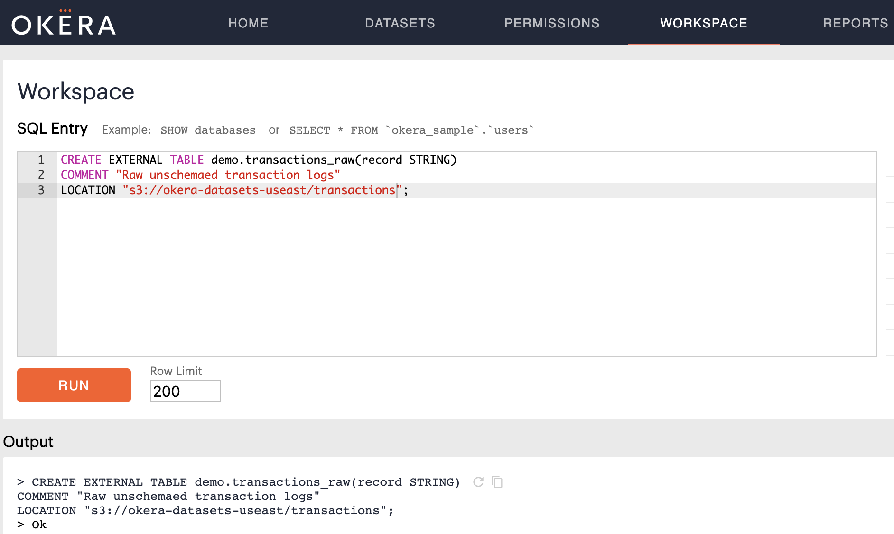
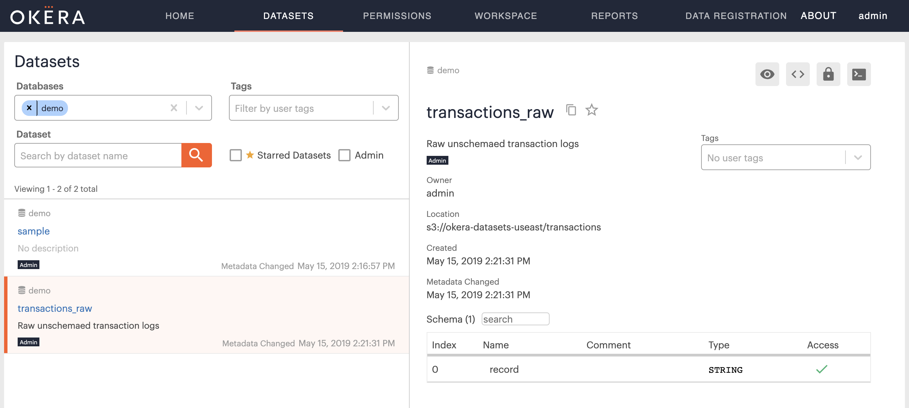
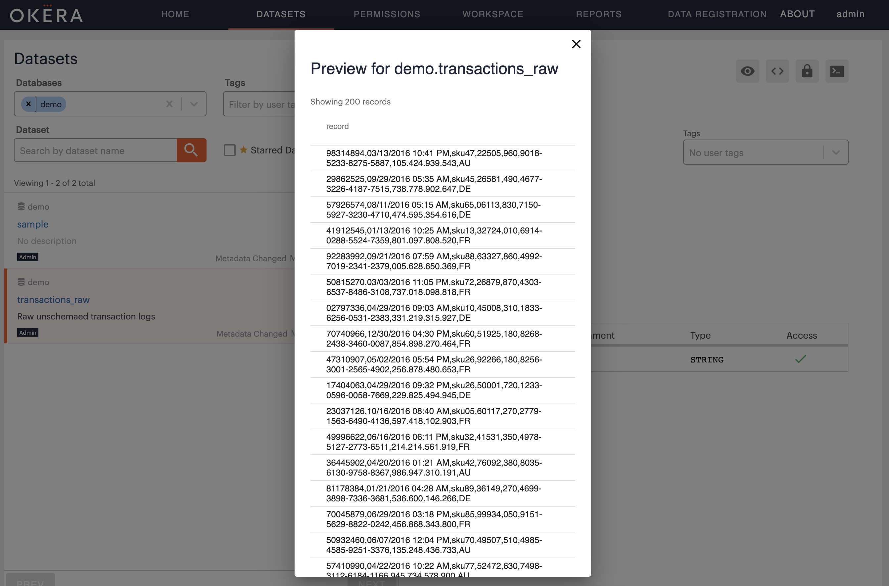
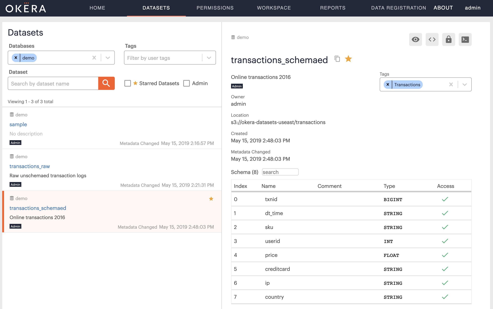
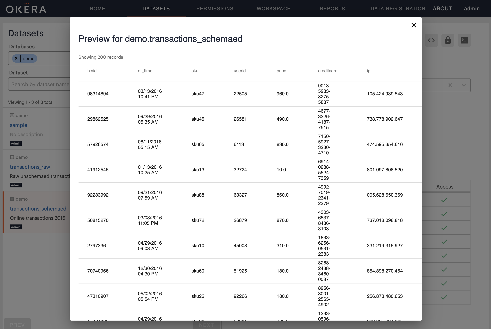
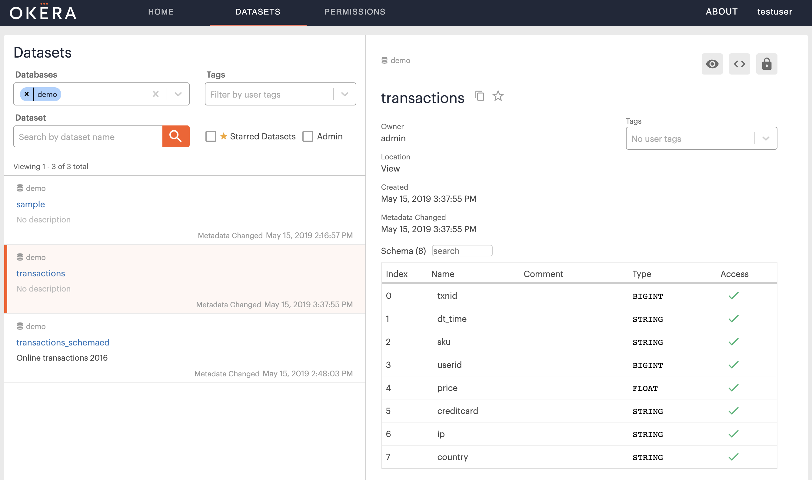
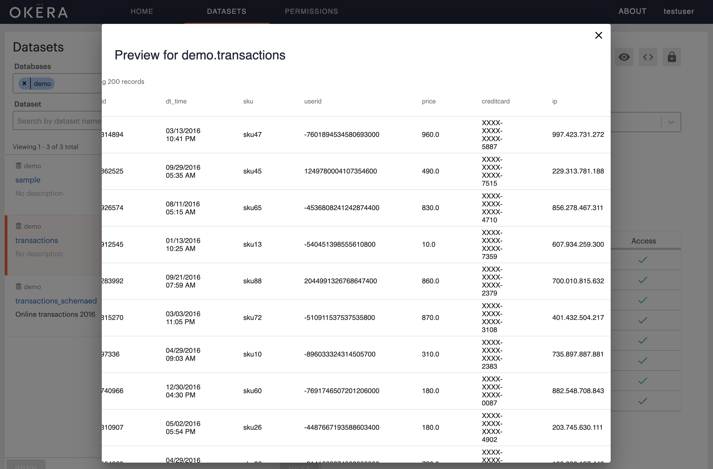

Tutorial: Onboarding datasets
This self-service tutorial guides you through a very common task: onboarding datasets containing sensitive data, e.g., those with personally identifying information (PII).
Difficulty: Easy
Time needed: 30 mins
Introduction
Onboarding a datasent into an ODAS cluster (one that your installed or a proof-of-concept cluster provided by Okera) requires performing the following steps:
- Define a schema for the dataset
- Identify sensitive columns
- Define an access control view over the dataset
We detail eacvh of these steps below.
Define Dataset Schema
Okera needs to be provided with metadata to allow it to access data stored in a data lake. ODAS provides two ways for users to create or update the metadata for datasets managed by the Schema Registry service: one can use SQL DDL statements in the Okera WebUI or command-line interface (CLI) to specify metadata; or one can use the Okera Data Registration service to crawl the underlying storage and find missing metadata automatically. In this tutorial, we will use an example dataset provided by Okera in a public AWS S3 bucket for which we have been explicitly provided the data schema. We will thus use SQL DDL statements to specify metadata, and use the Okera WebUI to execute all SQL DDL statements, using the Workspace tab
Note: You need to have administrative permissions to see the Workspace tab. It is sufficient to have admin permissions on the database where you use for this tutorial.
The example dataset we will use is located at s3://okera-datasets-useast/transactions and contains a CSV file that has sales transactions in it. We will use a database named demo for this tutorial, which can be created using:
CREATE DATABASE demo;
The easiest way to get started with the dataset is to parse the CSV file at line boundaries, that is, define each line as a single STRING field:
CREATE EXTERNAL TABLE demo.transactions_raw(record STRING)
COMMENT "Raw unschemaed transaction logs"
LOCATION "s3://okera-datasets-useast/transactions";
In the ODAS WebUI, this looks like this:

Notice the Ok in the Output section of the Workspace, which means the schema was created and can now be inspected.
Switch to the Dataset tab in the WebUI, enter demo into the Databases filter, then select the newly created transactions_raw table.
What you should see is similar to this:

Then click in the Preview button, located in the top right-hand corner of the Preview tab, resulting in the following:

The reason you are able to preview the dataset is twofold: first, you are the owner of the dataset definition, and second, the storage location used is publicly available.
Warning: If you fail at this step it is most likely because you are unable to access the storage location. Remember this is not tied to your user, but the IAM profile used by the ODAS servers, and indicates that the IAM profile in use does not support accessing public S3 buckets. You must ensure that the servers can access the location at least to list its contents and read the files found.
If all went as planned, you will see that each row in the transactions dataset contains reasonable data, including IDs, IP addresses, and possibly credit card numbers.
We can now apply a richer schema to this data by executing the following command:
CREATE EXTERNAL TABLE demo.transactions_schemaed(
txnid BIGINT, dt_time STRING, sku STRING, userid INT,
price FLOAT, creditcard STRING, ip STRING, country STRING)
COMMENT "Online transactions 2016"
ROW FORMAT DELIMITED
FIELDS TERMINATED BY ","
LOCATION "s3://okera-datasets-useast/transactions";
Switching to the Dataset tab again and filtering the demo database, should now show a new dataset, named transactions_schemaed, and you can click on it to see the list of columns it contains.

The previous command merely changed the metadata for the same files, but on access the Okera servers now parse each row into a set of columns, which is visible when you click on the Preview button for the new dataset:

Identify Sensitive Columns
The schema above indicates that the dataset contains columns that need to be protected from unauthorized access. We now enforce this by creating a new access control role using the ODAS role-based access control (RBAC) functionality:
CREATE ROLE analysts;
GRANT ROLE analysts TO GROUP test;
These DDL statements created a new role called analysts and grants all user from the group test access to it.
In other words, any further permissions granted to the role analysts is automatically available to all users that are part of the group test.
Note: ODAS is very flexible and can be configured as needed to support directory services (such as Active Directory or other LDAP servers) or even custom group resolution services.
Now that we have a set of users that we can test with, who have the analysts role assigned to them, the easiest way to restrict access is to give them read permissions only on the non-sensitive data:
GRANT SELECT(txnid, dt_time, sku, price, country)
ON TABLE demo.transactions_schemaed
TO ROLE analysts;
A few notes:
- You must grant explicit permissions for non-administrative users. Otherwise they will not be able to read the data at all, nor will they see the dataset listed in the Schema Registry.
- For testing use another computer, another browser, or the incognito mode of the running browser to log into the ODAS WebUI as second time.
While this is a quick way of allowing access to partial data, it does not allow any further functionality, such as masking or filtering of data, which can be achieved using access control views.
Define Access Control Views
To get greater flexibility when defining access control you can employ access control views, which are like regular SQL VIEWs but are restricted to only the SQL functionality needed to restrict (or allow) access.
To demonstrate this we create a view that transforms some column data based on the users permissions below:
CREATE VIEW demo.transactions AS
SELECT
txnid,
dt_time,
sku,
decode(user(), "admin", userid, tokenize(userid)) AS userid,
price,
decode(user(), "admin", creditcard, mask_ccn(creditcard)) AS creditcard,
decode(user(), "admin", ip, cast(fpt(ip) AS STRING)) AS ip,
country
FROM demo.transactions_schemaed;
GRANT SELECT ON TABLE demo.transactions TO ROLE analysts;
In essence, this view shows the same columns as long as you are considered an admin user.
If you are non-admin user, the sensitive fields are transformed: the user ID is tokenized, the credit card number is masked, and the IP address is subject to a format-preserving transformation (FPT).
The DDL also grants full access to the secure view for the test users.
Switch to another browser session as a test user.
Checking the WebUI, using the Dataset tab and clicking on the new view transactions, you can see the full access to the view:

But when you preview the dataset you will see the transformations applied on-the-fly, that is at query execution time:

You can read more about authorization and the built-in functions in our online docs.